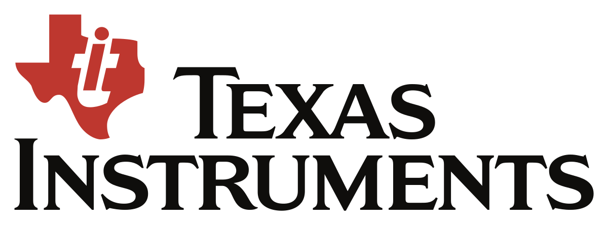

About Me
Hello World! I am Justine, a software engineer who aims to leverage my skills in an environment that values a proactive approach to utilizing cutting-edge technologies.
Skills
-

Web Development
HTML, CSS, JavaScript, Python, Django, Flask, Jinja, SQLs, Git, Heroku, ngrok
-

Mobile Development
Flutter, Dart, Android
-
Machine Learning Engineering
Google Cloud, Colab, Keras, Tensorflow, Python
-

UI/UX Design
Figma, Adobe Tools
Companies I've Been Affiliated With
-

-

-

- 
-